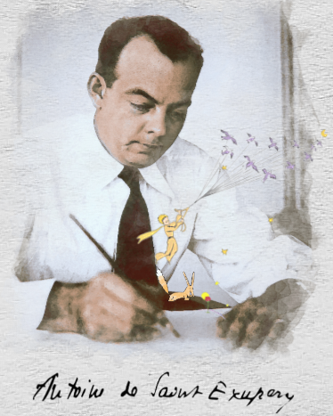

O Autor
Nascido em 29 de junho de 1900, na cidade de Lyon, em uma família aristocrática, Antoine de Saint Exupéry serviu nas fileiras da Força Aérea, onde se tornou piloto. Sua profissão desempenhou um papel fundamental em sua escrita, e ambas lhe renderam a prestigiosa Legião de Honra. Seus romances, como "Courrier Sud" (1929), "Vol de nuit" (1931, vencedor do Prix Femina) e "Terre des hommes" (1939, vencedor do Prix de l'Académie française), alcançaram sucesso mundial, assim como as histórias que escreveu durante a Segunda Guerra Mundial, enquanto estava exilado nos Estados Unidos. Entre essas obras notáveis, destacam-se "Piloto de Guerra" (1942) e "O Pequeno Príncipe" (1943).
Atravessou o Atlântico a bordo de um navio com tropas americanas para lutar pela França ocupada pelo exército alemão. Após retornar às Forças da França Livre, Saint Exupéry foi abatido em missão em 31 de julho de 1944, durante a Segunda Guerra Mundial.

O livro
Piloto Poeta Guiado pelas estrelas Antoine de Saint-Exupéry, viajou pelo mundo, decifrou o céu, criou laços entre as pessoas. Diminuindo as distâncias, fez o mundo parecer menor. Escrevendo, fez do nosso planeta, um mundo maior.
Antoine de Saint-Exupéry partiu para Nova York no fim de Dezembro de 1940, onde começou a desenhar, na frente aos editores, o recorrente menino de cabelos rebeldes. Quando lhe perguntavam, respondia: “Não é nada de mais, é apenas o garoto que existe no meu coração.” A primeira edição do Pequeno Príncipe apareceu em abril de 1943. Ele recebeu um dos primeiros exemplares alguns dias antes do seu embarque para a África do Norte. Toda a obra de Saint-Exupéry é centrada em valores fundamentais e universais. Elas fazem parte do nosso patrimônio. São os valores dos homens solidários, responsáveis e persistentes.
Dentro do Universo
Um pequeno príncipe nos convida a olhar com atenção o planeta que habitamos, cheio de presentes oferecidos pela natureza. Presentes aparentes ou escondidos, renováveis ou limitados. Mas todos eles revelam segredos quando os observamos com o olhar cristalino de uma criança. Estrelas que sabem sorrir. Antoine de Saint-Exupéry resgatou a criança que existe em cada um de nós, com encanto, ética e beleza.
O Pequeno Príncipe é o quarto livro mais vendido do mundo. Possui cerca de 140 milhões de livros vendidos em todo mundo, mais de 8 Milhões só no Brasil e foi traduzido em mais de 300 línguas e dialetos, incluindo o Braille. É um dos personagens mais famosos e queridos de todos os tempos, que empolga crianças e adultos com ensinamentos inesquecíveis. Sua história deixa marcas pela forma simples de suas mensagens de otimismo, simplicidade e amor ao nosso planeta.
“As estrelas são todas iluminadas... Não será para que cada um possa um dia encontrar a sua?”Antoine de Saint-Exupéry
...